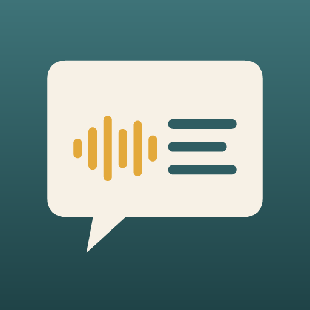

Back ThenTerms of use
Effective October 19, 2026
Back Then is made by Outport Software in Newfoundland and Labrador, Canada. By using Back Then you agree to these terms. They are written to be short and plain.
Using Back Then
You may use Back Then on your own devices for personal use. Please only record people who know they are being recorded and are happy to be.
Purchases
Back Then includes free stories. A one-time purchase unlocks unlimited use; there is no subscription. Purchases and refunds are handled by Google Play or Apple's App Store under their terms.
Typed words
Back Then uses artificial intelligence to type up recordings. It can mishear words, especially names and places, so please read the words before you share them. The original recording is always kept with the story.
No warranty
Back Then is provided as is, without warranties of any kind. To the extent the law allows, we are not liable for any loss arising from using the app, including the loss of any recording. Keep copies of stories that matter to you, for example by making the book.
Open source
Back Then is built on open source software and models. Their licenses are listed in the app under Settings, Acknowledgements.
Changes
We may update these terms. If we do, we will update this page and its effective date.